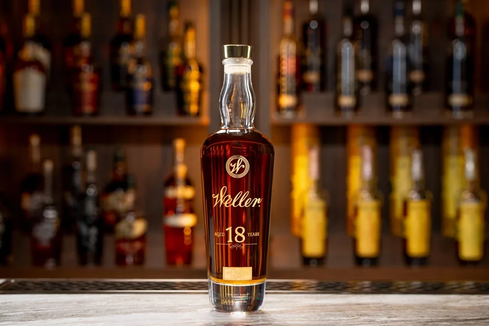

Quality 7.2†/10; Value 1.0/10 at the stated reference.
Very good execution is supported by balanced mature wood, nuts, fruit and a composed wheat profile. UPROXX’s restrained body, moderate complexity and medium finish prevent age alone from lifting this into the excellent band. The wheat whiskey uses parent execution anchors rather than a bourbon-flavor test. 4 5
The identified Lost N Liquor bottle is $3,199.99 for 700 mL, or $3,428.56 per 750 mL, versus the original $499 travel-retail MSRP. Positive balance evidence does not justify that current premium as drinking Value. Quality is unscored because wheat-whiskey anchors are absent, not because it has been judged bad. Retain Value 1.0 at the saved $3,428.56/750 mL ordinary-retail equivalent. The documented original $499/700 mL travel reference is separate context, not a replacement for that saved price.
Scope: Inaugural 2025 eighteen-year wheat whiskey; Wheat-whiskey execution is parent calibrated; this is not assessed for bourbon-like flavor.
The 2025 Weller 18 is an eighteen-year wheat whiskey, not eighteen-year Weller bourbon. Its travel-exclusive presentation and extraordinary price remain separate from the two retained tasting accounts, which emphasize elegance and restraint rather than overwhelming depth.
The name, the era and the limits of the story
The Weller name honors William Larue Weller and the brand’s historic association with wheated bourbon. Current Weller whiskey is made at Buffalo Trace in Frankfort, Kentucky. A historic connection to Stitzel-Weller is not evidence that a modern bottle contains old Stitzel-Weller stock. 2
Inaugural 2025 eighteen-year wheat whiskey; Bourbon anchors cannot score it. 3
![Weller whiskey poured into a glass in a Buffalo Trace brand photograph]()
Weller 18 Year Wheat Whiskey (2025): Kentucky straight wheat whiskey; Buffalo Trace Distillery · Sazerac · Kentucky. Proof of the identified expression.; 18 years. Composition: Undisclosed · wheat-majority recipe.
Specifications without invented precision
This is Kentucky straight wheat whiskey, not eighteen-year bourbon. The inaugural presentation holds 700 mL, so $499 normalizes to $534.64 per 750 mL. The producer announced travel-retail distribution through selected airports. Neither mash proportions nor the claim that it matches a Van Winkle recipe is disclosed. 3
Published percentages are reproduced only where disclosed. A distiller’s address, a retailer’s style field, an award entry and the actual bottle label answer different questions; unresolved differences are stated in the scope note rather than combined into a fictional recipe.
Original suggested bottle price was $499.00 for 700 mL. The Value card now uses the separately labeled current retail asking price, not that original price.
Exact scope. Inaugural 2025 eighteen-year wheat whiskey; Wheat-whiskey execution is parent calibrated; this is not assessed for bourbon-like flavor.
What the identified price buys
$3,199.99 / 700 mL · $3,428.56 /750 mL · Lost N Liquor · current exact 2025 / 700 mL listing · regular asking price; 750 mL equivalent
. Original and dated references are not confirmed current offers. A listing is not an inventory guarantee.
The identified Lost N Liquor bottle is $3,199.99 for 700 mL, or $3,428.56 per 750 mL, versus the original $499 travel-retail MSRP. Positive balance evidence does not justify that current premium as drinking Value. Quality is unscored because wheat-whiskey anchors are absent, not because it has been judged bad. Retain Value 1.0 at the saved $3,428.56/750 mL ordinary-retail equivalent. The documented original $499/700 mL travel reference is separate context, not a replacement for that saved price.
Five buy-price bands
750 mL equivalents; rounded editorial purchase thresholds based on alternatives, rather than a mechanical percentage formula or found offers.
Not established: exact current-bottle tasting or narrow-category comparison is insufficient. A precise exceptional-buy threshold would be invented.
Not established: no independently supported sweet spot is inferred from the producer price or a neighboring expression.
Not established: a posted price alone does not demonstrate normal drinking value.
Not established: a think-twice cutoff needs a reliable bottle identity, sensory record and relevant current alternatives.
Not established: no speculative pass ceiling is manufactured from missing evidence. Read the identified price and limitations first.
Five buy-price bands · 750 mL equivalent
Editorial shopping guidance tied to the competing bottles below. These are practical budget boundaries, not found offers. The numeric Value assessment and reference price remain unchanged.
Exceptional buy / stock-up
Under $60.00A low purchase price makes Weller 18 Year Wheat Whiskey (2025) attractive for the documented elegant eighteen-year wheat profile, excluding any collector premium. Star Hill Farm Wheat Whisky (2026) at $107.14 supplies the first real alternative: A much less expensive wheat whiskey for buyers valuing grain, fruit and texture; younger and stronger, so it is not an eighteen-year sensory replica.
Easy buy / sweet spot
$60.00 to under $100.00This is the sensible budget for buying Weller 18 Year Wheat Whiskey (2025) for the documented elegant eighteen-year wheat profile, excluding any collector premium, rather than paying for the label. Compare Bernheim Original Barrel Proof Wheat Whiskey (Batch A226) at $85.00: A mature high-proof wheat option whose lower price illustrates the drinking opportunity cost.
Fair buy
$100.00 to under $175.00At this price, the case for Weller 18 Year Wheat Whiskey (2025) rests on a preference for the documented elegant eighteen-year wheat profile, excluding any collector premium. WhistlePig Declaration Wheat — 2026 at $70.00 shows what the same shopping decision can buy: Another wheat-led purchase with its own wood treatment; compare its development rather than travel exclusivity.
Think twice / conditional
$175.00 to under $300.00The premium needs a specific preference for the documented elegant eighteen-year wheat profile, excluding any collector premium. Star Hill Farm Wheat Whisky (2026) remains $107.14 in its dated record; A much less expensive wheat whiskey for buyers valuing grain, fruit and texture; younger and stronger, so it is not an eighteen-year sensory replica. Do not assume scarcity improves the drinking experience.
Pass / trade up
$300.00 and aboveChoose WhistlePig Declaration Wheat — 2026 ($70.00 in its own dated record) before paying above this boundary solely for Weller 18 Year Wheat Whiskey (2025): Another wheat-led purchase with its own wood treatment; compare its development rather than travel exclusivity. Historical reference prices are comparisons, not promised offers.
What actually competes with this bottle?
These alternatives are chosen for this expression’s style, strength, maturity, documented quality and purchase role. Every price below retains its own dated reference; none implies current stock.
| Bottle | Proof / age | 750 mL reference | Why consider it |
|---|---|---|---|
| Star Hill Farm Wheat Whisky (2026) | 116.4 · NAS · 7- and 8-year components reported | $107.14 Original release SRP | A much less expensive wheat whiskey for buyers valuing grain, fruit and texture; younger and stronger, so it is not an eighteen-year sensory replica. $3,321.42 less; 116.4 proof versus 90. Very good execution with varied fruit, creamy grain, nuts and developing spice. The more varied profile and controlled texture support a small editorial step above the 2025 assessment, but Bourbon Obsessed’s dry tannic close and Artfully Bourbon’s preference for 2025’s distinctiveness prevent a definitive vintage winner. This is a drinking alternative, with its own recipe and source scope. |
| Bernheim Original Barrel Proof Wheat Whiskey (Batch A226) | 115.0 · 7-9 Years | $85.00 Published review price / original MSRP — 2026; dated reference | A mature high-proof wheat option whose lower price illustrates the drinking opportunity cost. $3,343.56 less; 115 proof versus 90; 9 years versus 18. Cinnamon apple and bread dough. This is a drinking alternative, with its own recipe and source scope. |
| WhistlePig Declaration Wheat — 2026 | 86 · NAS | $70.00 Published review price / MSRP — 2026 | Another wheat-led purchase with its own wood treatment; compare its development rather than travel exclusivity. $3,358.56 less; 86 proof versus 90. Caramel, sweet wood and apple oatmeal introduce soft wheat, char and herbs. This is a drinking alternative, with its own recipe and source scope. |
How to approach this expression
Serving recommendations are editorial inferences from this expression’s documented sensory profile and strength; they are not a claim of first-hand cocktail testing.
Neat: restrained maturity
Weller 18 Year Wheat Whiskey (2025) (90 proof): Serve at room temperature and follow pear, hazelnut and tobacco into wheat toast. At 90 proof, the attraction is composed flavor rather than forceful texture.
Water: avoid flattening
Weller 18 Year Wheat Whiskey (2025): Try the first sample undiluted. The medium finish and restrained body can lose the detail that distinguishes an old wheat whiskey when water is added too freely.
A wheat-focused flight
Weller 18 Year Wheat Whiskey (2025): Use small pours beside another wheat whiskey, with strength differences kept in view. Age and rarity do not replace a comparison of actual fruit, grain and wood.
Avoid heavy mixing
Weller 18 Year Wheat Whiskey (2025): Strong vermouth, citrus or syrup is likely to obscure the gentle nut-and-fruit development. Choose a cheaper wheat expression when a mixer is the main attraction.
Critical synthesis
Editorial synthesis of the credited independent tasting narratives. Producer intent and specifications are separate evidence. Paired channel/article notes count once; inaccessible video transcripts are not inferred.
Nose
Hazelnut, fruit, tobacco and mature sweets.
Palate
Composed fruit, nut and spice; elegant but restrained texture.
Finish
Medium-length wheat toast, pepper and soft sweetness.
InsideHook / Kirk Miller
The direct 2025 tasting finds balanced tobacco, pear and spice without dominant old oak. 4
UPROXX / Frank Dobbins III
The Weller 18 section describes nutty fruit, restrained texture, moderate complexity and a medium-length finish; enthusiasm is measured. 5
Evidence limits and disagreement
One detailed and one short independent account, both matched to Weller 18 in 2025. No age bonus or travel-exclusive prestige bonus.
2 fully usable independent sensory voice(s). Distinct independent publishers or community authors; syndicated and paired video/written accounts count once. No source grade is averaged or converted, and no personal tasting is claimed. Confidence: Medium-low.
Two scores, two different questions
Very good execution is supported by balanced mature wood, nuts, fruit and a composed wheat profile. UPROXX’s restrained body, moderate complexity and medium finish prevent age alone from lifting this into the excellent band. The wheat whiskey uses parent execution anchors rather than a bourbon-flavor test.
The identified Lost N Liquor bottle is $3,199.99 for 700 mL, or $3,428.56 per 750 mL, versus the original $499 travel-retail MSRP. Positive balance evidence does not justify that current premium as drinking Value. Quality is unscored because wheat-whiskey anchors are absent, not because it has been judged bad. Retain Value 1.0 at the saved $3,428.56/750 mL ordinary-retail equivalent. The documented original $499/700 mL travel reference is separate context, not a replacement for that saved price.
Parent-category anchors
American straight-grain whiskey execution: the established Bourbon 1/5/10 references supply severe-defect, ordinary-competence and reference-execution comparisons. Grain, sweetness, oak intensity and proof need not resemble bourbon. The sparse native category remains unestablished; these are borrowed parent execution references, not new native anchors. Very good execution is supported by balanced mature wood, nuts, fruit and a composed wheat profile. UPROXX’s restrained body, moderate complexity and medium finish prevent age alone from lifting this into the excellent band. The wheat whiskey uses parent execution anchors rather than a bourbon-flavor test.
Execution references: Cleveland Black Reserve — early 2013–14 · Maker’s Mark · Bulleit Bourbon · Michter’s 20 Year Bourbon — 2024 release
Quality confidence: Medium-low. Native category anchor status: unestablished.
Scoring hierarchy and evidence rules · Native anchor evidence · Understanding the Quality Scale
Value calibration: same style comparison; confidence Medium-low. Comparison order: same-style competitors where useful, then parent-category competitors, then general whiskey buyer opportunity cost at the reference budget. Active comparison: same style comparison. The identified Lost N Liquor bottle is $3,199.99 for 700 mL, or $3,428.56 per 750 mL, versus the original $499 travel-retail MSRP. Positive balance evidence does not justify that current premium as drinking Value. Quality is unscored because wheat-whiskey anchors are absent, not because it has been judged bad. Retain Value 1.0 at the saved $3,428.56/750 mL ordinary-retail equivalent. The documented original $499/700 mL travel reference is separate context, not a replacement for that saved price. Saved comparator references: Star Hill Farm Wheat Whisky (2025) $100.00 /750 mL (Original release SRP); Star Hill Farm Wheat Whisky (2026) $107.14 /750 mL (Original release SRP); Woodford Reserve Wheat Whiskey $39.95 /750 mL (NC ABC regular retail); Maker’s Mark Cellar Aged (2025) $174.95 /750 mL (NC ABC regular retail). Rarity, packaging prestige, collector demand and resale prices supply no drinking-value bonus.
Quality excludes price and judges successful execution of the intended style. 1 catastrophic · 2 extremely poor · 3 poor · 4 below average · 5 ordinary/competent · 6 good · 7 very good · 8 excellent · 9 elite · 10 reference-class. Native: no marker; † parent; ‡ universal rubric; § evidence-limited provisional. N/A means insufficient matched evidence or uncertain identity. Value is a separate buying question; 5 means fair. Calibration reviewed October 6, 2026; earlier retained tasting and price dates remain applicable.
Sources and image credits
Producer/state sources establish identity and pricing. Independent written reviews supply sensory evidence; promotional notes are not critical votes. Community remarks and dating limits are identified. All images are embedded, credited producer or editorial photographs for this personal reference collection.
- producerBuffalo Trace press release, reproduced by Breaking Bourbon · checked October 5, 2026. Dated July 25, 2025 producer announcement; category, proof, bottle sizes and original suggested prices. Image credit: Weller 18 Year Wheat Whiskey (2025) · producer / release image.https://www.breakingbourbon.com/bourbon-whiskey-press-releases/buffalo-trace-distillery-continues-wellers-expansion
- producerBuffalo Trace Distillery · checked October 5, 2026. Current producer family, historical brand account and credited product / context photographs. Image credit: Weller whiskey poured into a glass in a Buffalo Trace brand photograph.https://www.buffalotracedistillery.com/our-brands/w-l-weller/
- producerWeller · producer / explicitly attributed retailer · checked October 5, 2026. Identifies the documented expression, disclosed production facts and current listing scope; promotional flavor claims are not independent reviews.https://www.breakingbourbon.com/bourbon-whiskey-press-releases/buffalo-trace-distillery-continues-wellers-expansion
- reviewThe direct 2025 tasting finds balanced tobacco, pear and spice without dominant old oak.
- reviewThe Weller 18 section describes nutty fruit, restrained texture, moderate complexity and a medium-length finish; enthusiasm is measured.
- pricingIdentified producer / retailer / dated review · checked October 5, 2026. Lost N Liquor · current exact 2025 / 700 mL listing · regular asking price; 750 mL equivalent; a listing does not guarantee stock.https://lostnliquor.com/products/weller-18-year-wheat-whiskey-2025-700-ml
- pricingNorth Carolina ABC Commission · checked October 5, 2026. Regular quarter, effective August 1, 2026; excludes monthly promotions.https://www.abc.nc.gov/pricing/august-october-2026-printer-friendly/open
Bottle photograph source: breakingbourbon.com; original exact-sample review. Image stored locally as assets/bottles/weller-18-year-wheat-2025.webp. Buffalo Trace release photograph of the Weller 18 Year wheat whiskey presentation. Credit: Buffalo Trace, via Breaking Bourbon.
Exact expression image: Exact reviewed bottle photograph; credited to breakingbourbon.com. Buffalo Trace release photograph of the Weller 18 Year wheat whiskey presentation. Credit: Buffalo Trace, via Breaking Bourbon..
Weller
Compare the Buffalo Trace portfolio · Coverage, editions and packaging map
Annual vintages, recipe finishes and barrel programs are separate identities. A sibling’s score is not inherited.